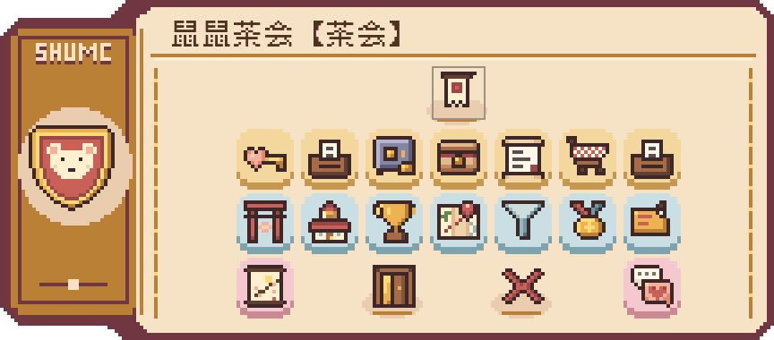
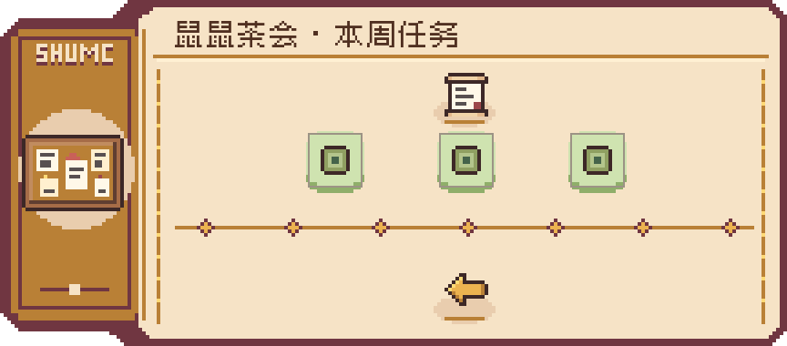
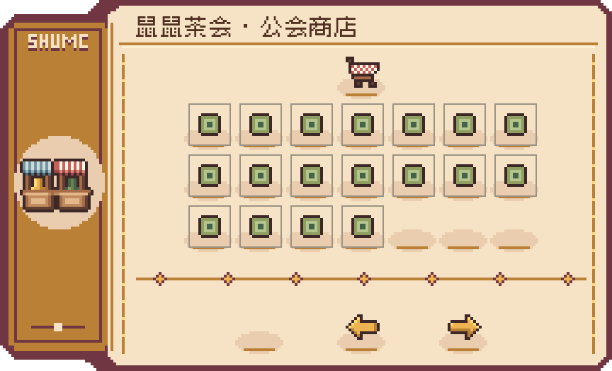
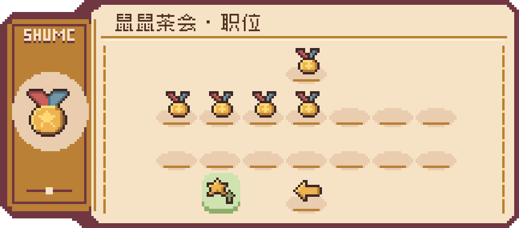
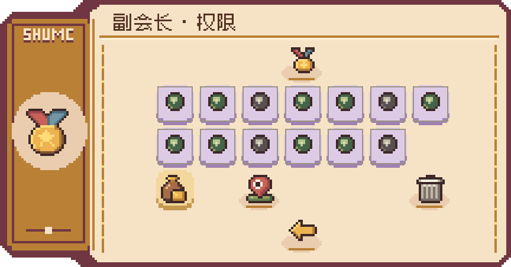
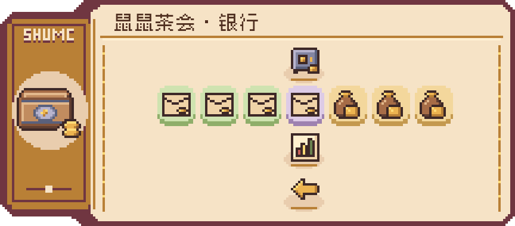
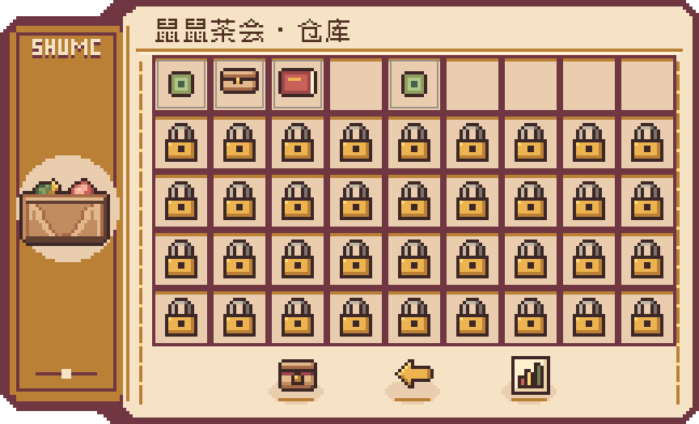

公会
和朋友组公会：建会与加入、公会经验与 10 级奖励、每周任务、周榜、公会商店、职位权限、银行仓库、传送点、驻扎小镇
一句话
和朋友组一个 🛡 公会：平常钓鱼、种田、下星渊、做委托就给公会涨经验，公会升级给每位成员发奖励、解锁更多人数和仓库；每周一起做 3 个公会任务、冲公会周榜；用个人贡献度在公会商店换种子、晶洞、洒水器和专属外观。职位、权限、会标颜色、简介都能自己定。没有税、没有维护费、没有战争。
别和冒险公会搞混
打怪悬赏、秘境试炼、军械库的是 ⚔ 冒险公会（/adventure、/冒险）。这一页说的是玩家自己组的 🛡 公会：/guild（别名 /gonghui、/公会、/gh）。
怎么开始
自己建一个公会
- 准备 1000 茶屋币。
- 输入
/guild create 名字 会标，例如/guild create 樱花茶会 樱花。 - 名字 2–8 个字（汉字 / 字母 / 数字 / 下划线），会标 2–4 个字（汉字 / 字母 / 数字）。名字和会标都不能和别的公会重复（不分大小写）。
- 建好后
/guild打开公会主页（也可以在主菜单 Shift+F 第 4 行「🏘 领地与社群」点 🛡 公会）。 - 去 🎨 公会资料里选招募方式，再
/guild invite 玩家名拉朋友进来。
加入别人的公会
/guild list打开 🗺 公会目录，看每个公会的会长、人数、等级、招募方式。- 开放加入的公会点一下直接进；需要申请的点「申请」（或
/guild apply 公会名），等有权限的人审批；仅邀请的只能等邀请（聊天栏 [✔ 接受] [✖ 拒绝]，5 分钟有效，也可以/guild accept/deny）。 - 有的公会设了申请门槛：你的最高专精等级要 ≥ N（被邀请的人不受限）。
- 一人一会。退出或被移出后 24 小时内不能再加入或建立公会。
- 第一次加入任何公会时会收到新成员见面礼：100 币 + 樱花抹茶拿铁 ×2 + 樱桃草莓种子 ×4（每个玩家一辈子只发一次）。


公会经验与等级
不用专门刷，成员平常玩就给公会涨经验，同时给自己涨同样多的个人贡献度（公会商店的货币）：
| 你做了什么 | 公会经验 / 个人贡献 |
|---|---|
| 钓到一条鱼 | +2 |
| 收获一次作物 | +1 |
| 星渊清掉一个战斗 / 挑战房 | +3 |
| 星渊打倒首领 | +15 |
| 领一个每日委托奖励 | +10 |
| 完成每周公会任务 | 见下（不占每日上限） |
每人每天最多给公会 300 经验（周任务不算在内），第二天重置。
| 等级 | 累计经验 | 人数上限 | 仓库格数 | 新解锁 | 升级奖励（每位成员一份） |
|---|---|---|---|---|---|
| Lv1 | 0 | 10 | 9 | 🚩 公会传送点、白色会标 | — |
| Lv2 | 600 | 13 | 9 | 嫩绿会标 | 200 币 + 樱桃草莓种子 ×8 |
| Lv3 | 1,800 | 16 | 18 | — | 300 币 + 丰产农家肥 ×4 + 称号「🚩 开拓者」 |
| Lv4 | 3,600 | 20 | 18 | 湖蓝会标、🎏 公会旗帜（每人每周领 1 面） | 400 币 + 紫晶晶洞 ×2 + 🎏 鼠纹暖帘 |
| Lv5 | 6,000 | 23 | 27 | 钓鱼 / 农耕专精经验 +5% | 500 币 + 银质洒水器 + 灵雨丰收卷轴 ×2 |
| Lv6 | 9,500 | 26 | 27 | 樱粉、藤紫会标 | 600 币 + 樱花营养精料 ×4 + 称号「🏛 公会元老」 |
| Lv7 | 14,000 | 30 | 36 | — | 700 币 + 星辉铱金晶洞 + 黄金鱼王刺身 ×2 |
| Lv8 | 20,000 | 33 | 36 | 鎏金会标、钓鱼 / 农耕专精经验 +10% | 800 币 + 铱金洒水器 + 樱花秘银锭 ×4 |
| Lv9 | 28,000 | 36 | 45 | — | 900 币 + 星辉铱金晶洞 ×2 + 樱花许愿河灯 ×3 |
| Lv10 | 38,000 | 40 | 45 | 朱红会标 | 1500 币 + 永久光环「🌸 樱花旋舞」+ 称号「👑 传奇公会」 |
人数上限含会长。升级奖励在线、离线的成员都有，放进 🎁 待领奖励。专精经验加成只加钓鱼和农耕两门。
每周公会任务
- 每周一 0 点（北京时间）给每个公会从任务池里抽 3 个共享目标。
- 有「📜 接取周任务」权限的人先在任务页接取，然后有「🧺 提交周任务」权限的成员在任务页里点自己背包里的东西交上去（一次交一整组，多出来的自动退回）。
- 完成一个：公会经验 +250~500，交过东西的人每人贡献 +40~80，每位成员一份奖励：120 币 + 樱花晶洞。
| 任务池 | 公会经验 | 交过东西的人贡献 |
|---|---|---|
| 交 64 份作物（任意） | 400 | 60 |
| 交 24 份樱桃草莓 | 350 | 50 |
| 交 32 条鱼 | 400 | 60 |
| 交 6 枚星辉徽章 | 500 | 80 |
| 交 4 块锻造合金 | 450 | 70 |
| 交 192 个橡木原木 | 300 | 40 |
| 交 512 个圆石 | 250 | 40 |
| 交 48 个铁锭 | 350 | 50 |
| 交 64 个白色羊毛 | 250 | 40 |


🏆 公会周榜 /guild top
每周一结算上周的公会经验，前 3 名公会的每位成员一份奖励箱：
| 名次 | 每位成员奖励 |
|---|---|
| 🥇 第 1 名 | 800 币 + 星辉铱金晶洞 + 称号「🏆 周榜冠军」 |
| 🥈 第 2 名 | 500 币 + 紫晶晶洞 ×2 |
| 🥉 第 3 名 | 300 币 + 紫晶晶洞 |
🎁 待领奖励 /guild rewards
升级奖励、周任务奖励、周榜奖励、见面礼、公会旗帜，全都进这个箱子（和小镇繁荣度奖励是同一个），离线也不会丢，上线点一下领。背包满了会掉在脚下。每份奖励单独记账，不会领两次。
公会商店 /guild shop
用个人贡献度买（贡献度记在你在这个公会里的成员档案上，退会后清零，换了公会要重新攒），「等级」是公会要到几级才能买：
| 商品 | 贡献 | 条件 / 限购 |
|---|---|---|
| 樱桃草莓种子 ×8 | 60 | — |
| 宇治抹茶种子 ×8 | 80 | — |
| 天山雪莲种子 ×4 | 120 | Lv2 |
| 速长沃土肥 ×4 | 120 | — |
| 丰产农家肥 ×4 | 140 | — |
| 金星品质肥 ×4 | 180 | Lv3 |
| 优质牧草饲料 ×8 | 80 | — |
| 樱花营养精料 ×4 | 200 | Lv3 |
| 樱花晶洞 ×3 | 120 | — |
| 紫晶晶洞 ×2 | 260 | Lv4，每周 3 次 |
| 星辉铱金晶洞 | 500 | Lv6，每周 1 次 |
| 灵雨丰收卷轴 | 200 | Lv3 |
| 晴空祈愿卷轴 | 220 | Lv4 |
| 星露精铁锭 ×4 | 160 | Lv2 |
| 星辉紫晶核 | 400 | Lv5，每周 2 次 |
| 樱花抹茶拿铁 ×3 | 90 | — |
| 盐渍樱花瓣 ×4（春季香料） | 100 | — |
| 附魔之瓶 ×16 | 100 | — |
| 铜制洒水器 | 250 | Lv3 |
| 银质洒水器 | 600 | Lv6，每周 1 次 |
| 🎏 公会旗帜（鼠纹暖帘家具） | 150 | Lv4 |
| 樱花许愿河灯 ×2 | 150 | Lv5 |
| 🏷 称号「💎 公会砥柱」 | 3,000 | Lv5，一辈子 1 次 |
| 👘 衣橱「花环」 | 4,500 | Lv7，一辈子 1 次 |
| ✨ 永久光环「金秋落叶」 | 8,000 | Lv8，一辈子 1 次 |
公会专属称号（🚩 开拓者、🏛 公会元老、👑 传奇公会、🏆 周榜冠军、💎 公会砥柱）不在称号图鉴里，拿到后在 /title「我的称号」里戴。


职位与权限
- 默认 4 个职位：会长 / 副会长 / 干事 / 成员。会长可以新建职位（含会长最多 8 个）、改名（1–6 字）、调顺序（Shift+左键往上、Shift+右键往下）、删除（那个职位的人改成最低职位）。
- 🎖 职位与权限 → 点一个职位 → 权限逐项开关：✉ 邀请成员 · 🚪 移出成员 · 📬 审批申请 · ⬆ 任免下级职位 · 💰 取用银行（+ 每日取钱上限）· 📦 取用仓库 · 📜 接取周任务 · 🧺 提交周任务 · 📍 设置传送点 · 🎨 编辑简介 / 公告 · 🏘 驻扎小镇 · 🧩 银行付子领地 · 🔇 公会聊天禁言。
- 会长永远拥有全部权限，不能改不能删，只能转让。
- 任免、移出、禁言只能对比自己职位低的人；只能任命比自己低的职位。
| 默认职位 | 默认权限 |
|---|---|
| 会长 | 全部，不受限 |
| 副会长 | 全部；每天最多从银行取 2,000 币 |
| 干事 | 邀请、审批、取钱（每天 500 币）、取仓库、接取 / 提交周任务、禁言 |
| 成员 | 提交周任务 |
所有人都能往银行存钱、往仓库放东西。




公会资料与会标
🎨 公会资料（有「编辑简介 / 公告」权限的人能改）：
| 项目 | 说明 |
|---|---|
| 简介 | 60 字，目录里显示（/guild set desc 文字） |
| 公告 | 80 字，改了通知在线成员，成员上线时也会提醒（/guild set notice 文字） |
| 入会欢迎语 | 40 字（/guild set welcome 文字） |
| 招募方式 | 开放加入 / 需要申请 / 仅邀请 |
| 申请门槛 | 最高专精等级 ≥ N（最高能设到 50，/guild set minlevel 等级） |
| 会标颜色 | 白（Lv1）· 嫩绿（Lv2）· 湖蓝（Lv4）· 樱粉、藤紫（Lv6）· 鎏金（Lv8）· 朱红（Lv10） |
| 会徽图标 | 目录和周榜里显示，16 种可选（8 色旗帜、樱花树苗、钓竿、金锄、紫水晶、钟、灯笼、蛋糕、蜜脾） |
| 改名 / 改会标 | 只有会长，从公会银行扣 300 币（/guild set name|tag 新名字） |
所有玩家写的文字都会自动去掉颜色代码、格式符号，并按字数截断。
名字前缀
/guild prefix（和 /town prefix 是同一个设置）决定在 Tab 列表、聊天、头顶名字里，称号前面显示什么：
| 选项 | 效果（示例） |
|---|---|
| 自动（默认） | 有公会显示【会标】，没有公会显示〔小镇名〕 |
| 只显示公会会标 | 【樱花】[ 称号 ] 名字 |
| 只显示小镇名 | 〔樱桃镇〕[ 称号 ] 名字 |
| 都显示（会标在前 / 小镇在前） | 【樱花】〔樱桃镇〕[ 称号 ] 名字，或反过来 |
| 都不显示 | 只有称号 |
小镇名取你当居民以上的那个私人领地 / 小镇。
公会银行与仓库
- 银行（
/guild bank）：人人能存（/guild bank deposit 金额），有「💰 取用银行」权限的职位按每日限额取（/guild bank withdraw 金额，会长不限），最多存 1 亿。/guild bank log看最近 50 条流水。 - 仓库（
/guild warehouse）：公会共享箱子，格数随等级 9 → 45。点自己背包里的东西 = 整组放进去；点仓库里的格子 = 拿走（要「📦 取用仓库」权限）。保留最近 50 条存取日志，别人开着的仓库页会跟着刷新。 - 公会解散时，银行余额和仓库物品全部进会长的 🎁 待领奖励。




🚩 公会传送点与对外开放
- 建会就能设：有「📍 设置传送点」权限的人站在能站稳的地方
/guild sethome（星渊里不能设）。成员/guild home免费传送，没有冷却。 - 对外开放（默认关）：在公会主页 🚩 传送点上 Shift+左键，或
/guild public。开了以后公会出现在 🗺 公开地点的「公会」页签，谁都能/guild visit 公会名，或在公会目录里右键那个公会过去。外人只是传送过去，银行、仓库、权限都不受影响。 - 每次传送前检查落点：有岩浆、悬空、被方块堵住等不安全情况时不传，清掉传送点并关掉对外开放，在公会频道里提醒重新设置。
公会 × 小镇：驻扎
- 有「🏘 驻扎小镇」权限的人
/guild garrison 镇名：小镇镇长就是会长 → 直接生效；否则镇长收到申请，5 分钟内同意。一个公会只能驻扎一个小镇，一个小镇只接一个公会。 - 驻扎后所有成员（含以后加入的）自动成为该镇居民（已经是别处居民的、或小镇满员的跳过）。退会、撤出（
/guild garrison leave）、镇长结束、公会解散时，只收回因驻扎得到、且镇长没改过身份的居民。 - 有「🧩 银行付子领地」权限、又是该镇居民的人，可以在 🏘 驻扎页用公会银行买镇上出售中的子领地给自己（钱付给镇长）。这块地同样记下买价，镇长收回时按价退给持有它的成员。
公会聊天
/g 消息（别名 /gc、/公会聊天）只发给本会在线成员，格式是「[公会·会标] 职位 名字: 消息」。只输入 /g = 切换聊天频道，之后直接打字就发到公会，再输一次 /g 切回来。被禁言的人发不了。
和帮工联动
雇了 👩🌾 领地帮工的人如果在公会里，帮工工作页会多两个按钮：🛡 工资从公会银行付（要有取钱权限，占你当天的取钱额度）、🛡 交货到公会仓库。帮工干的活不给公会经验。
指令一览
| 指令 | 作用 |
|---|---|
/guild（/gonghui /公会 /gh） | 公会主菜单 |
/guild create 名字 会标 | 建会（1000 币） |
/guild list · /guild info [公会] · /guild apply 公会 | 公会目录 · 看资料 · 申请 / 加入 |
/guild invite 玩家 · /guild accept|deny [公会] · /guild apps | 邀请 · 处理邀请 · 入会申请 |
/guild leave · /guild dissolve | 退出 · 解散（会长；都有确认页） |
/guild bank [deposit|withdraw 金额|log] · /guild warehouse | 银行 · 仓库 |
/guild weekly · /guild shop · /guild rewards · /guild top | 周任务 · 商店 · 待领奖励 · 周榜 |
/guild home · /guild sethome | 公会传送点 |
/guild public · /guild visit [公会] | 传送点对外开放开 / 关 · 去别的公会（不写名字 = 打开公开地点的公会页） |
/guild prefix | 名字前缀 |
/guild set desc|notice|welcome 文字 | 改资料 |
/guild set name|tag 新名字 | 会长改名 / 会标（银行付 300） |
/guild set addrank 名字 · rank 序号 名字 · limit 序号 金额 · minlevel 等级 | 新建职位 · 改职位名 · 每日取钱限额 · 申请门槛 |
/guild garrison 镇名|leave | 驻扎 / 撤出小镇 |
/g [消息]（/gc） | 公会聊天 / 切换频道 |
常见问题
我一个人能玩公会吗？
能。经验靠日常玩法自己涨，等级奖励每人一份。但每人每天最多给 300 经验，人多升得快得多，周任务也好做。
退会后贡献度还在吗？
不在。贡献度跟着你在这个公会里的成员档案走，退会就清零，想换东西先在公会商店花掉。退会 24 小时内也不能加入新公会。见面礼一辈子只发一次，换公会不会再发。
每天 300 经验上限怎么算？
钓鱼、收获、星渊、每日委托给的经验加起来一天最多 300，超过的不算；周任务给的经验不占这个上限。
帮工钓的鱼算公会经验吗？
不算，只有你亲手做的才算。